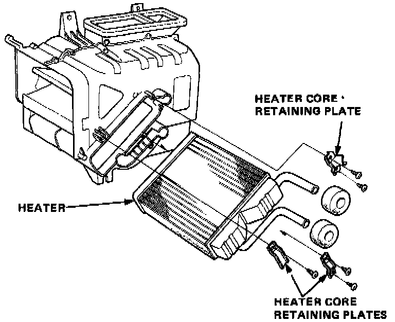
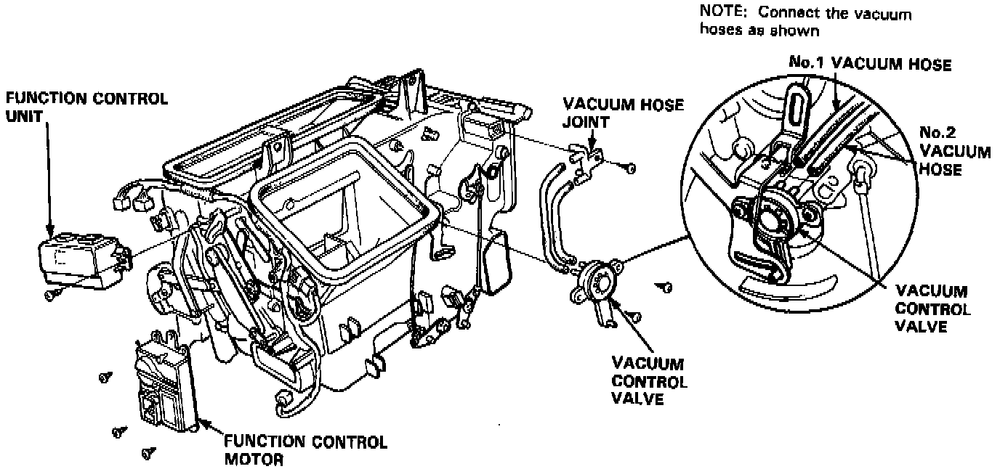

Heater Assembly Overhaul
Heater Assembly Overhaul1. Remove the heater assembly.

2. Remove the self-tapping screws and retaining plates.

3. Pull out the heater core from the heater housing.
Remove the function control unit and function control motor if necessary.
Remove the vacuum control valve and vacuum joint if necessary.
Install in the reverse order of removal and:
- Loosen the bleed bolt on the engine and refill the radiator and reservoir tank with the proper coolant mixture. Tighten the bleed bolt when all the trapped air has escaped and coolant begins to flow from it.